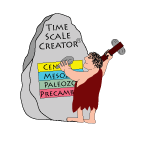

Timescale Creator
Block Column Maker
To continue on an existing project:
drag & drop your datafile(*.json) here
drag & drop your datafile(*.json) here
Are you sure you want to continue ?
You are about to load the saved data. This will override your current data.
Continue ×Are you sure you want to continue ?
You are about to save the block data. This will override any previously saved data.
Note: Data being saved should be less than 5 MB. If the data size is greater than 5 MB, it will not be saved.
Continue ×